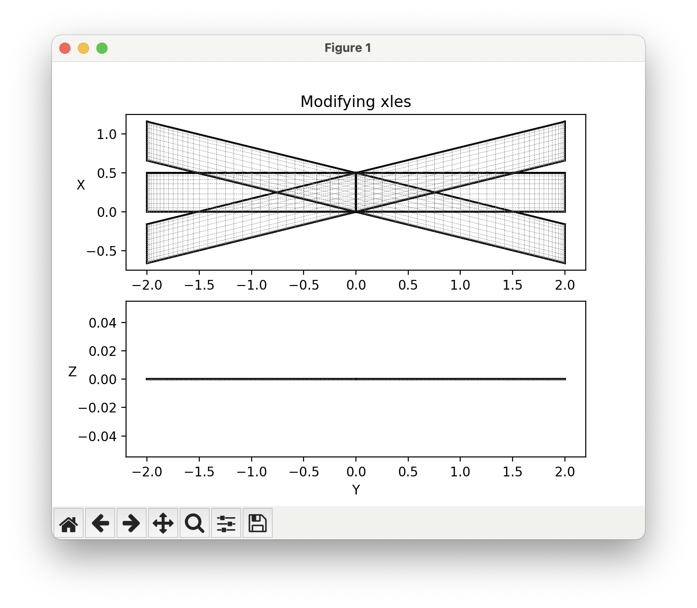
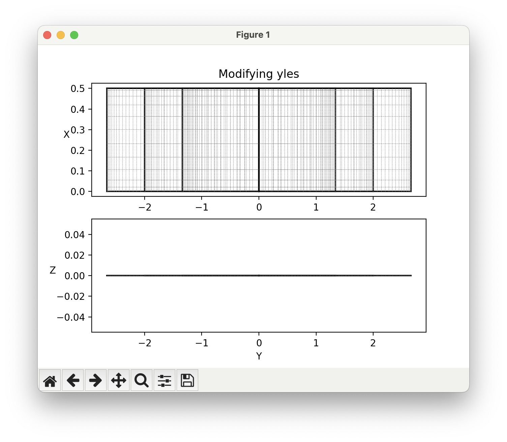
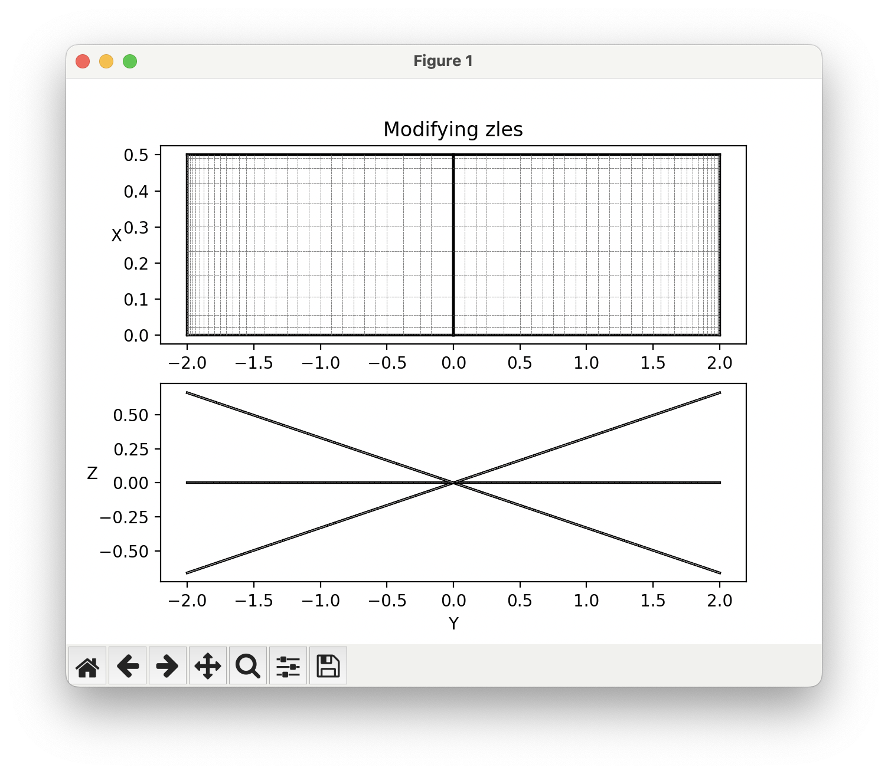

Modifying Geometry for Parameter Sweeps¶
OptVL not only offers aerodynamic analysis capabilities but also provides tools to access and modify geometric parameters of your aircraft models. This page shows how users can retrieve and set geometry parameters for parameter sweeps.
Getting geometry parameters¶
To retrieve surface parameters from your AVL model, use the get_surface_params method.
By default, this method only returns data about the geometry of the surface, but information about the paneling and control surfaces can also be included by passing the corresponding flags, like so:
surf_data = ovl.get_surface_params(
include_geom=True,
include_paneling=True,
include_con_surf=True
)
get_surface_params come directly from the geometry file used by AVL.
See the AVL user guide for more information about all the possible variables.
If you only want to get a specific design variable, then you can instead use:
For most use cases, you will only need to interact with the geometric variables below.
| Variable | Description |
|---|---|
| scale | Scale factor. |
| translate | Translation vector. |
| angle | Surface angle. |
| aincs | Array of angle increments. |
| chords | Array of chord lengths. |
| xyzles | Array of leading edge coordinates. |
Setting geometry parameters¶
To apply geometry changes to the OVLSolver object, use the set_surface_params method.
data = {
'Wing': {
'angle': 3.5, # a surface keyword example
"chords": np.array([0.5, 0.4, 0.3, 0.2, 0.1]) #section keyword example
}
}
get_surface_params method, so I recommend calling get_surface_params and looking at the output if you get confused:
Similar to the getting methods, you can also set values one at a time like so:
Example modifying y scale¶
To increase the span of our wing, we can stretch it in the y direction by adjusting the y scale.
from optvl import OVLSolver
import numpy as np
write_tecplot_files = True
ovl_solver = OVLSolver(geo_file="../geom_files/aircraft.avl", debug=False, timing=False)
# set the angle of attack
ovl_solver.set_variable("alpha", 5.00)
for idx_scale, y_scale in enumerate(np.linspace(0.5, 1.5, 5)):
ovl_solver.set_surface_params({"Wing": {"scale": np.array([1, y_scale, 1])}})
ovl_solver.execute_run()
stab_derivs = ovl_solver.get_stab_derivs()
print(f"----------------- y_scale: {y_scale} ----------------")
for key in stab_derivs:
print(f"{key:16}: {stab_derivs[key]:.6f}")
if write_tecplot_files:
# this way works on tecplot and paraview
ovl_solver.write_tecplot(f"wing_scale_{idx_scale}")
# Warning: The solution time does not work on paraview
# ovl_solver.write_tecplot(f'wing_scale_{y_scale}', solution_time=idx_scale)
Example modifying the leading edge coordinates¶
The example below modifies the array of leading edge points to modify the planform.
from optvl import OVLSolver
import numpy as np
from pprint import pprint
import matplotlib.pyplot as plt
ovl_solver = OVLSolver(geo_file="../geom_files/rectangle.avl", debug=False, timing=False)
# set the angle of attack
# ovl_solver.set_variable("alpha", 5.00)
yles = ovl_solver.get_surface_param("Wing", "yles")
xles = ovl_solver.get_surface_param("Wing", "xles")
zles = ovl_solver.get_surface_param("Wing", "zles")
span = yles[-1]
relative_span = yles / span
# Parameters
# params = ['xles', 'zles', 'yles']
values = {"xles": xles, "zles": zles, "yles": yles}
# Loop over each parameter type
for param, value in values.items():
# Create subplots
ax1 = plt.subplot(2, 1, 1)
ax2 = plt.subplot(2, 1, 2)
ax2.set_ylabel("Z", rotation=0)
ax2.set_xlabel("Y")
ax1.set_ylabel("X", rotation=0)
ax1.set_title(f"Modifying {param}")
# Perform parameter sweep
for d in np.linspace(-0.33 * span, 0.33 * span, 3):
new_value = value + d * relative_span
ovl_solver.set_surface_param("Wing", param, new_value)
ovl_solver.plot_geom(axes=[ax1, ax2])
# Reset to baseline
ovl_solver.set_surface_param("Wing", param, value)
# Show plot
plt.show()
Running the script generates the following plots showing the modifications to the geometry.
  